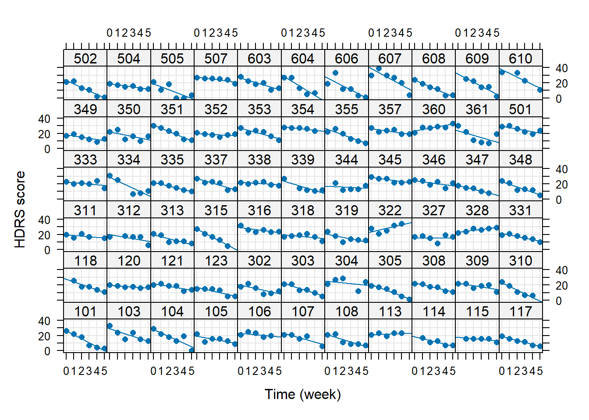
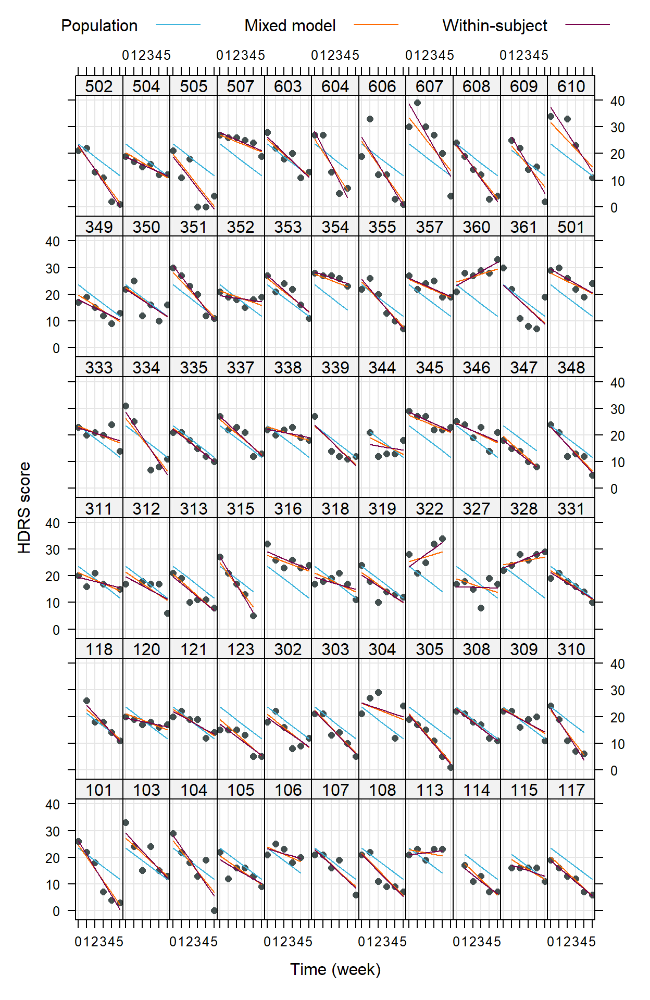
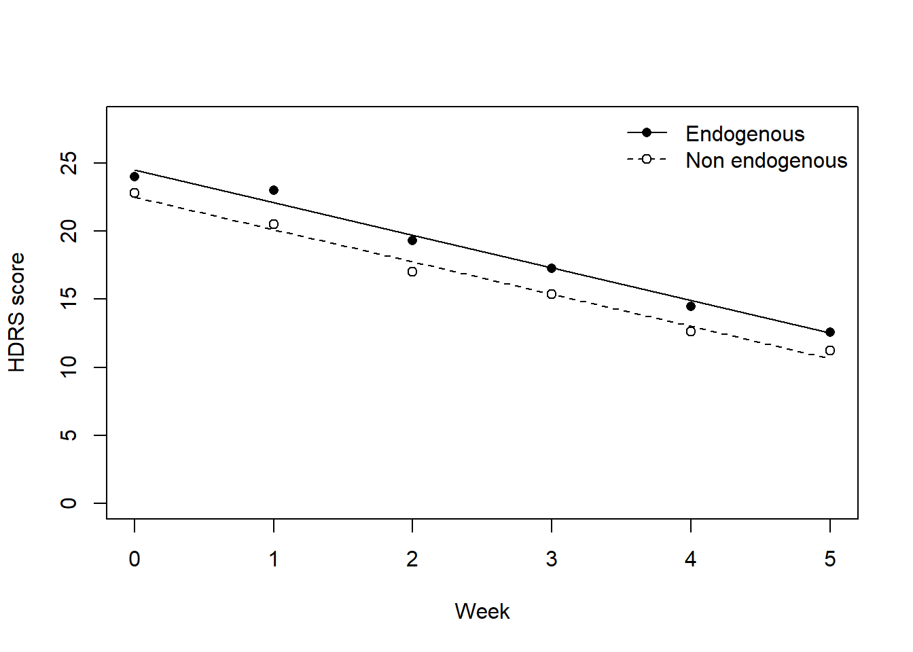

Chapter 13 Power simulation for LMMs
Code
library(lattice)
library(lme4)13.1 Reanalysis
13.1.1 Application context: Depression and type of diagnosis
- Reisby et al. (1977) studied the effect of Imipramin on 66 inpatients treated for depression
- Depression was measured with the Hamilton depression rating scale
- Patients were classified into endogenous and non-endogenous depressed
- Depression was measured weekly for 6 time points
Data: reisby.dat
Code
dat <- read.table("data/reisby.dat", header = TRUE)
dat$id <- factor(dat$id)
dat$diag <- factor(dat$diag, levels = c("nonen", "endog"))
dat <- na.omit(dat) # drop missing values
head(dat, n = 13)## id hamd week diag endweek
## 1 101 26 0 nonen 0
## 2 101 22 1 nonen 0
## 3 101 18 2 nonen 0
## 4 101 7 3 nonen 0
## 5 101 4 4 nonen 0
## 6 101 3 5 nonen 0
## 7 103 33 0 nonen 0
## 8 103 24 1 nonen 0
## 9 103 15 2 nonen 0
## 10 103 24 3 nonen 0
## 11 103 15 4 nonen 0
## 12 103 13 5 nonen 0
## 13 104 29 0 endog 0Code
xyplot(hamd ~ week | id, data = dat, type=c("g", "r", "p"),
pch = 16, layout = c(11, 6), ylab = "HDRS score", xlab = "Time (week)")
13.1.2 Random-intercept model
\[ \begin{aligned} Y_{ij} &= \beta_0 + \beta_1 \, \mathtt{week}_{ij} + \upsilon_{0i} + \varepsilon_{ij} \\ \upsilon_{0i} &\sim N(0, \sigma^2_{\upsilon_0}) \text{ i.i.d.} \\ \mathbf{\varepsilon}_i &\sim N(0, \, \sigma^2) \text{ i.i.d.} \\ i &= 1, \ldots, I, \quad j = 1, \ldots n_i \end{aligned} \]
Code
m1 <- lmer(hamd ~ week + (1 | id), data = dat, REML = FALSE)
summary(m1)## Linear mixed model fit by maximum likelihood ['lmerMod']
## Formula: hamd ~ week + (1 | id)
## Data: dat
##
## AIC BIC logLik -2*log(L) df.resid
## 2293.2 2308.9 -1142.6 2285.2 371
##
## Scaled residuals:
## Min 1Q Median 3Q Max
## -3.1739 -0.5876 -0.0342 0.5465 3.5297
##
## Random effects:
## Groups Name Variance Std.Dev.
## id (Intercept) 16.16 4.019
## Residual 19.04 4.363
## Number of obs: 375, groups: id, 66
##
## Fixed effects:
## Estimate Std. Error t value
## (Intercept) 23.5518 0.6385 36.88
## week -2.3757 0.1350 -17.60
##
## Correlation of Fixed Effects:
## (Intr)
## week -0.52413.1.3 Random-slope model
\[ \begin{aligned} Y_{ij} &= \beta_0 + \beta_1 \, \mathtt{week}_{ij} + \upsilon_{0i} + \upsilon_{1i}\, \mathtt{week}_{ij} + \varepsilon_{ij} \\ \begin{pmatrix} \upsilon_{0i}\\ \upsilon_{1i} \end{pmatrix} &\sim N \left(\begin{pmatrix} 0\\ 0 \end{pmatrix}, \, \mathbf{\Sigma}_\upsilon = \begin{pmatrix} \sigma^2_{\upsilon_0} & \sigma_{\upsilon_0 \upsilon_1} \\ \sigma_{\upsilon_0 \upsilon_1} & \sigma^2_{\upsilon_1} \\ \end{pmatrix} \right) \text{ i.i.d.} \\ \mathbf{\varepsilon}_i &\sim N(\mathbf{0}, \, \sigma^2 \mathbf{I}_{n_i}) \text{ i.i.d.} \\ i &= 1, \ldots, I, \quad j = 1, \ldots n_i \end{aligned} \]
Code
m2 <- lmer(hamd ~ week + (week | id), data = dat, REML = FALSE)
summary(m2)## Linear mixed model fit by maximum likelihood ['lmerMod']
## Formula: hamd ~ week + (week | id)
## Data: dat
##
## AIC BIC logLik -2*log(L) df.resid
## 2231.0 2254.6 -1109.5 2219.0 369
##
## Scaled residuals:
## Min 1Q Median 3Q Max
## -2.7460 -0.5016 0.0332 0.5177 3.6834
##
## Random effects:
## Groups Name Variance Std.Dev. Corr
## id (Intercept) 12.631 3.554
## week 2.079 1.442 -0.28
## Residual 12.216 3.495
## Number of obs: 375, groups: id, 66
##
## Fixed effects:
## Estimate Std. Error t value
## (Intercept) 23.5769 0.5456 43.22
## week -2.3771 0.2087 -11.39
##
## Correlation of Fixed Effects:
## (Intr)
## week -0.44913.1.4 Partial pooling
Code
indiv <- unlist(
sapply(unique(dat$id),
function(i) predict(lm(hamd ~ week, dat[dat$id == i, ])))
)
xyplot(hamd + predict(m2, re.form = ~ 0) + predict(m2) + indiv ~ week | id,
data = dat, type = c("p", "l", "l", "l"), pch = 16, grid = TRUE,
distribute.type = TRUE, layout = c(11, 6), ylab = "HDRS score",
xlab = "Time (week)",
# customize colors
col = c("#434F4F", "#3CB4DC", "#FF6900", "#78004B"),
# add legend
key = list(space = "top", columns = 3,
text = list(c("Population", "Mixed model", "Within-subject")),
lines = list(col = c("#3CB4DC", "#FF6900", "#78004B")))
)
13.1.5 By-group random-slope model
Code
m3 <- lmer(hamd ~ week + diag + (week | id), data = dat, REML = FALSE)
m4 <- lmer(hamd ~ week * diag + (week | id), data = dat, REML = FALSE)
anova(m3, m4)## Data: dat
## Models:
## m3: hamd ~ week + diag + (week | id)
## m4: hamd ~ week * diag + (week | id)
## npar AIC BIC logLik -2*log(L) Chisq Df Pr(>Chisq)
## m3 7 2228.9 2256.4 -1107.5 2214.9
## m4 8 2230.9 2262.3 -1107.5 2214.9 0.0042 1 0.948613.1.6 Means and predicted HDRS score by group
Code
dat2 <- aggregate(hamd ~ week + diag, dat, mean)
dat2$m4 <- predict(m4, newdata = dat2, re.form = ~ 0)
plot(m4 ~ week, dat2[dat2$diag == "endog", ], type = "l",
ylim=c(0, 28), xlab="Week", ylab = "HDRS score")
lines(m4 ~ week, dat2[dat2$diag == "nonen", ], lty = 2)
points(hamd ~ week, dat2[dat2$diag == "endog", ], pch = 16)
points(hamd ~ week, dat2[dat2$diag == "nonen", ], pch = 21, bg = "white")
legend("topright", c("Endogenous", "Non endogenous"),
lty = 1:2, pch = c(16, 21), pt.bg = "white", bty = "n")
13.2 Power simulation
13.2.1 Setup
Code
## Study design and sample sizes
n_week <- 6
n_subj <- 80
n <- n_week * n_subj
dat <- data.frame(
id = factor(rep(seq_len(n_subj), each = n_week)),
week = rep(0:(n_week - 1), times = n_subj),
treat = factor(rep(0:1, each = n/2), labels = c("ctr", "trt"))
)
## Fixed effects and variance components
beta <- c("(Intercept)" = 23, week = -0.5, treattrt = 0, "week:treattrt" = -1)
se <- 3.5 # residual sd
r <- -0.3
t(chol(VarCorr(m4)$id))[lower.tri(diag(2), diag = TRUE)] / sigma(m3)## [1] 0.9760902 -0.1175204 0.3952024Code
# su <- c(3.5, 1.5)
# Su <- r * su %o% su
# diag(Su) <- su^2 # covariance matrix of random effects
su1 <- 3.5
su2 <- 1.5
Su <- matrix(c(su1^2, r * su1 * su2, r * su1 * su2, su2^2), nrow = 2, ncol = 2)13.2.2 Power
13.2.2.1 Simulate data with bivariate normal distribution
Code
pval <- replicate(200, {
# Data generation
means <- model.matrix( ~ week * treat, dat) %*% beta
ranu <- MASS::mvrnorm(n_subj, mu = c(0, 0), Sigma = Su)
e <- rnorm(n_subj * n_week, mean = 0, sd = se)
y <- means + ranu[dat$id, 1] + ranu[dat$id, 2] * dat$week + e
# Fitting model to test H0
m0 <- lmer(y ~ week + treat + (1 + week | id), data = dat, REML = FALSE)
m1 <- lmer(y ~ week * treat + (1 + week | id), data = dat, REML = FALSE)
anova(m0, m1)["m1", "Pr(>Chisq)"]
}
)
mean(pval < 0.05)## [1] 0.78513.2.2.2 Simulate data with lme4::simulate()
Code
## Gory details
fixef(m4)## (Intercept) week diagendog week:diagendog
## 22.47626332 -2.36568746 1.98802087 -0.02705576Code
getME(m4, "theta")## id.(Intercept) id.week.(Intercept) id.week
## 0.9760823 -0.1175194 0.3951992Code
t(chol(VarCorr(m4)$id))[lower.tri(diag(2), diag = TRUE)] / sigma(m4)## [1] 0.9760823 -0.1175194 0.3951992Code
# Cholesky decomposition
Lt <- chol(Su) / se
pars <- list(theta = t(Lt)[lower.tri(Lt, TRUE)],
beta = beta, sigma = se)
names(pars$theta) <- c("id.(Intercept)", "id.week.(Intercept)", "id.week")
pval <- replicate(200, {
y <- simulate(~ week * treat + (week | id),
newparams = pars, newdata = dat)$sim_1
m1 <- lmer(y ~ week + treat + (week | id), data = dat, REML = FALSE)
m2 <- lmer(y ~ week * treat + (week | id), data = dat, REML = FALSE)
anova(m1, m2)$"Pr(>Chisq)"[2]
})
mean(pval < 0.05)## [1] 0.71513.2.3 Parameter recovery
Code
par <- replicate(200, {
means <- model.matrix( ~ week * treat, dat) %*% beta
ranu <- MASS::mvrnorm(n_subj, mu = c(0, 0), Sigma = Su)
e <- rnorm(n_subj * n_week, mean = 0, sd = se)
y <- means + ranu[dat$id, 1] + ranu[dat$id, 2] * dat$week + e
m1 <- lmer(y ~ week * treat + (1 + week | id), data = dat, REML = FALSE)
list(fixef = fixef(m1), theta = getME(m1, "theta"), sigma = sigma(m1))
}, simplify = FALSE
)
rowMeans(sapply(par, function(x) x$fixef))## (Intercept) week treattrt week:treattrt
## 22.98928760 -0.51150704 0.02675854 -0.97446036Code
rowMeans(sapply(par, function(x) x$theta))## id.(Intercept) id.week.(Intercept) id.week
## 0.9731571 -0.1223714 0.3978360Code
mean(sapply(par, function(x) x$sigma))## [1] 3.502159Code
beta## (Intercept) week treattrt week:treattrt
## 23.0 -0.5 0.0 -1.0Code
Lt <- chol(Su)
t(Lt)[lower.tri(Lt, diag = TRUE)] / se## [1] 1.0000000 -0.1285714 0.4088311Code
se## [1] 3.5